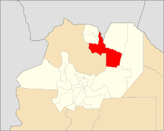

Ubicacion geografica
Orán está situada a 230 km de su capital provincial, Salta, en una zona de clima tropical (se halla 33 km al norte del trópico de Capricornio), de grandes ríos, principalmente dedicada a los cultivos comerciales. El centro urbano se encuentra a 32 km al sur de la frontera boliviana, a unos 3 km al oeste del caudaloso río Bermejo, y a escasos 20 km al sur de la confluencia del Río Bermejo con el Río Grande de Tarija, siendo atravesado el ejido de la ciudad por la ruta nacional RN 50.
